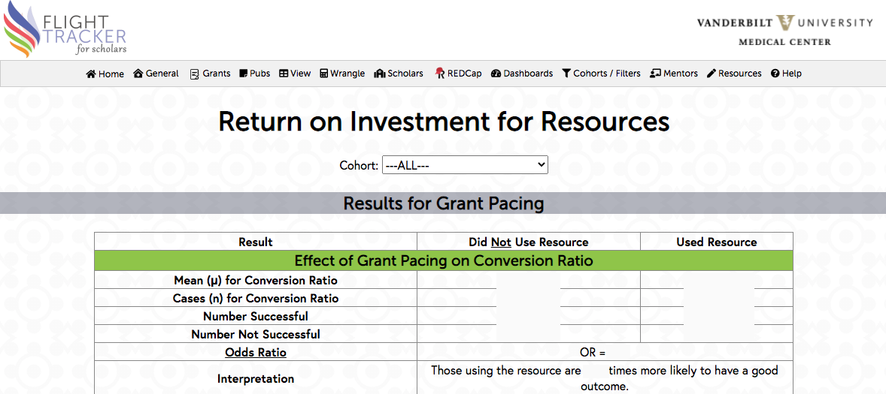

This page measures how desirable outcomes are affected by the use of specific resources. Many entities invest a lot of effort and dollars into scholars’ success, and this provides some way of gauging this investment’s effectiveness. (Resources can be set up in Flight Tracker’s Configure Application page under the General menu. Examples of resources are attending a workshop or accessing prior grant applications.)
This approach forms two groups (a cohort and a control group) based on whether or not each scholar has used the resource. This can thus be structured as a cohort-control study. Obviously, confounding is at work here in that scholars who use the resource are more likely to be overachievers, and overachievers are more likely to have positive outcomes.
The four measured outcomes are:
Each resource tracked in your Flight Tracker instance is reported in its own table. A comparison-of-means test is made on each paired outcome, and the result is displayed in the table. The table also contains a suggested plain-language interpretation.
